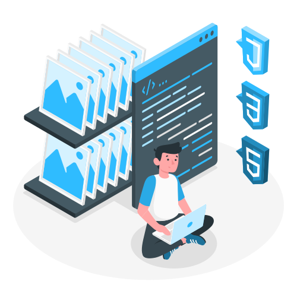

Mes projets
Au cours de mes études, j'ai pu réalisé plusieurs projets. Vu que je souhaite me spécialisé dans le développement web, vous pourrez découvrir les sites sur lesquels j'ai travaillé, ainsi que leurs codes via mon GitHub.
Easy Apply
Easy Apply est un site de recrutement qui favorise la rencontre candidats/employeurs via un système de matching. Ce site est un véritable projet professionnel réalisé à la demande de l'agence Easy Apply. J'ai travaillé en tant que développeur Front-End, je me suis donc chargé du design du site, de l'ajout d'animation et de l'implémentation du responsive. Malgré les difficultés rencontrées lors de ce projet, j'ai acquis de nouvelles compétences en Front-end et appris à me servir de nouveaux outils (tel que Tailwind et Laravel).
Miap
Mon projet final de mon DUT Informatique, avec mon stage, il marquera la fin de mon Bac+2. Ce projet est un site web qui balance Front-end et Back-end. Ce site vous permet de lister vos restaurants préféré et de vous les partager entre amis. Il est également disponible en anglais (partiellement), il vous suffit de cliquer sur l'icone du globe. Nous avons également une page Blog, pour vous suggérer quelques restaurants, une page A propos, pour un savoir plus sur nous et notre projet et une page Contact, pour nous contacter en cas de problème. N'hésitez pas à lister vos meilleures restaurants et de nous les partager.
Location de véhicules
Une fois les bases maitrisé, nous avons découvert le back-end. Ce projet est un site qui permet de louer des (faux) véhicules. Cela nous a permis de nous entrainer avec le PHP et Symfony.
Le site de l'IUT Paris Descartes 2.0
Nous avions pour mission de reproduire la page d'accueil du site de notre université. Cela n'était pas chose facile car nous n'avions pas encore appris le Javascript. Mais nous ne nous sommes pas laissés abattre ! Malgré notre manque de connaissance et de temps, nous avions réussi à produire un rendu presque identique à l'original !
Street Web : un site dédié à l'exposition "The World of Banksy"
Nous devions créer un site pour présenter une forme d'art, mon équipe et moi-même avons donc décidé de présenter le Street Art. Pour cela, nous avons assisté à l'exposition du virtuose de cet art : Banksy. Notre similaire à un blog : nous donnons notre avis sur l'exposition et l'a faisons découvrir à nos internautes. Ce projet nous a permis de consolidé nos connaissances en HTML/CSS et Bootstrap tout en apprenant davantage sur ces langages.
Le site sur les arts numériques : FindArt
Mon équipe et moi-même avons créé ce site pour nous entrainer à utiliser des CMS (ici Wix.com). Nous avions comme sujet "les arts numériques". Pour être plus précis, notre site montre qu'il est désormais possible de créer de l'art grâce à son ordinateur et que plusieurs formes d'art sont nées durant ces dernières années. Pour rendre notre site plus crédible, nous avons incarné le rôle de développeurs et/ou artistes accomplis. Ce site fût l'un de mes projets préférés et je suis plutôt satisfait du résultat.